Bem-vindo(a) a documentação do projeto Dating Request!
Eu irei te ensinar o passo a passo de como criar um programa em Python para pedir alguém em namoro!
Nota: Se você estiver usando o Windows, eu disponibilizei um exemplo do programa "Dating_request.exe" já pronto nesse repositório para você baixar e se encantar!
Instalando o Python3 e o Pip.
Para criar o ambiente virtual, precisamos ter o Python e o Pip instalandos na máquina.
Instalando no Linux
- Python3 versão 3.9 ou acima:
sudo apt install python3
- Pip:
sudo apt install python3-pip
Instalando no Windows
- Acesse o site do Python3 oficial, baixe o instalador do python 3.x para Windows.
- Execute o instalador que você baixou e siga as instruções na tela.
- Marque a opção "Adicionar Python 3.x ao PATH" durante a instalação.
- Para instalar o pip, abra o cmd ou powershell e execute o comando:
python -m ensurepip --upgrade
Instalando no Mac OS
- Abra o terminal e instale o Homebrew:
/bin/bash -c "$(curl -fsSL https://raw.githubusercontent.com/Homebrew/install/HEAD/install.sh)"
- Agora instale o Python:
brew install python3
- Por fim, instale o pip:
sudo easy_install pip
Criando o ambiente virtual.
Para instalação de algumas ferramentas essenciais como o "PySide6", precisamos criar um ambiente virtual.
- Rode esse comando no terminal para criar o ambiente virtual:
python3 -m venv venv
- Agora ative o ambiente virtual:
source venv/bin/activate
- Instale o pacote "pipenv":
pip install pipenv
Criando a interface do programa.
Instalando a biblioteca necessária
Devemos baixar a biblioteca do PySide para podermos criar a interface do nosso programa com Qt Designer.
pip install pyside6
Usando o Qt Designer
Para iniciar o Qt Designer, temos que executar um comando:
pipenv run pyside6-designer
Criando a janela do programa
- Ao iniciar o Qt Designer, selecione a opção "Main Window"
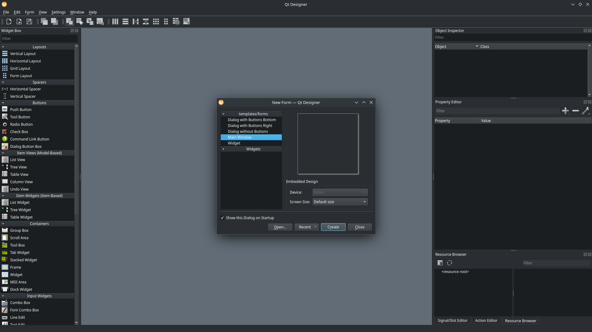
- Agora remova o "menu bar", clicando com o botão direito do mouse na parte superior da "Main Window"
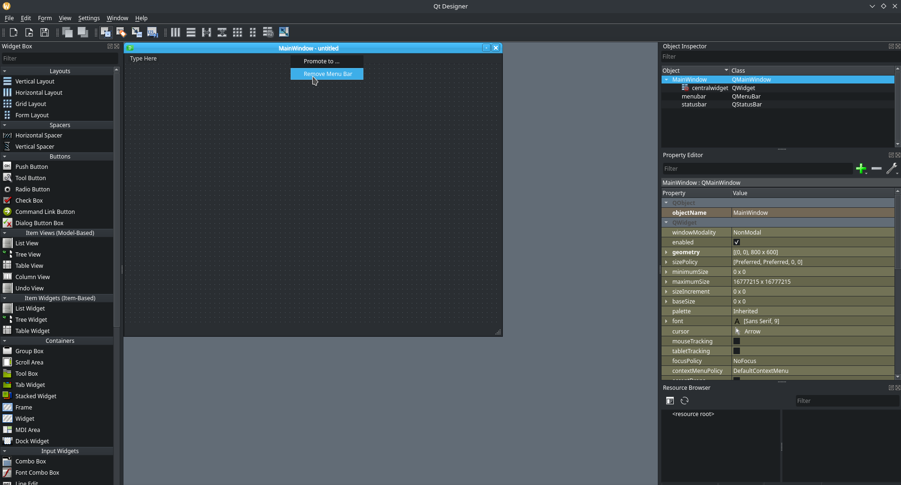
- Também remova o "status bar", clicando com o botão direito do mouse na parte inferior da "Main Window"
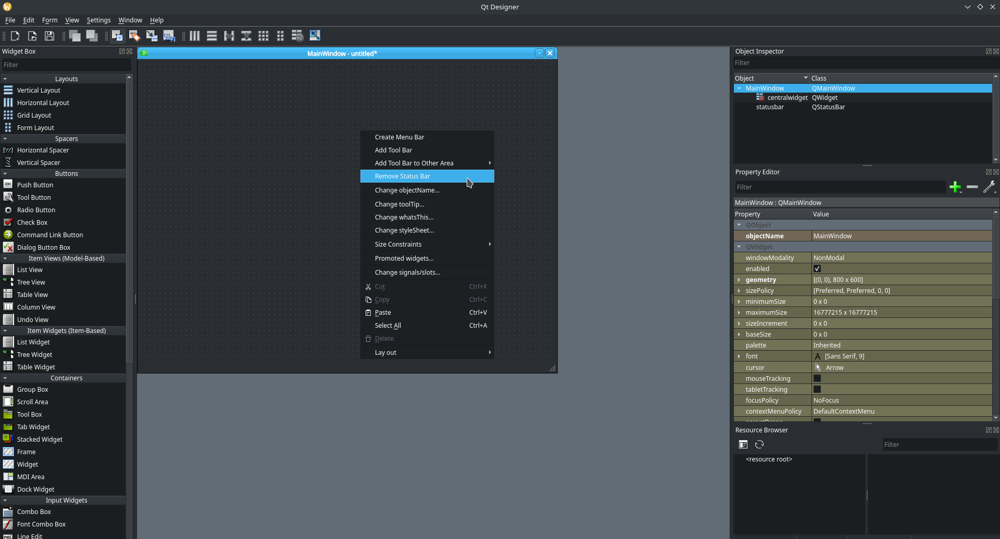
- Mude o tamanho da "Main Window" de acordo com sua preferência.
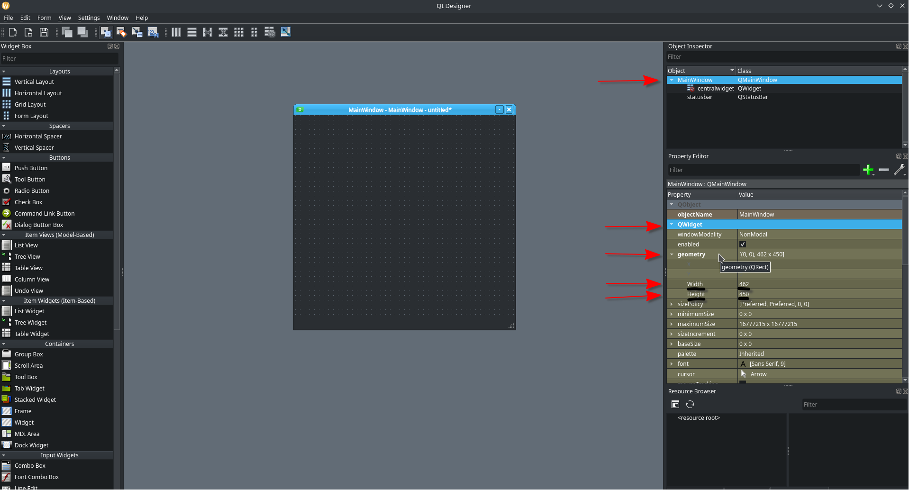
Adicionando os campos de "label"
As "labels" são necessárias para nós criarmos a pergunta e as respostas
Criando a "label" principal
- Vamos adicionar uma "label" com a pergunta "Quer namorar comigo?":
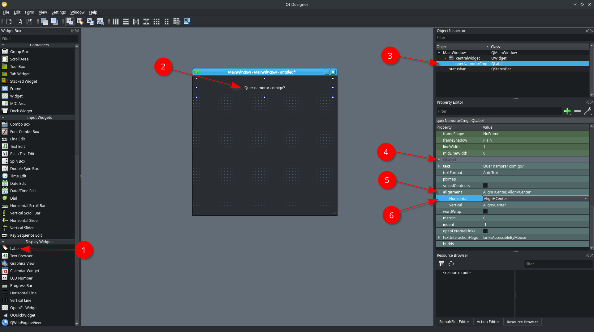
- No canto esquerdo, desça até achar a opção "label", agora você deve clicar, segurar e arrastar a opção "label" até a "Main Window".
- Adicione a pergunta que você deseja fazer na "label".
- É recomendado dar um nome a "label" para tornar a identificação mais fácil
- Na seção "Property Editor", localizada no canto direito, procure a sub-seção "QLabel".
- Agora clique na seção "aligment" e mude o campo "Horizontal"
- Você deve mudar o campo "Horizontal" para a opção "AlignHCenter", agora sua "label" está centralizada.
Criando os "frames" e os botões das respostas
- Adicione dois "frames" a sua "Main Window"
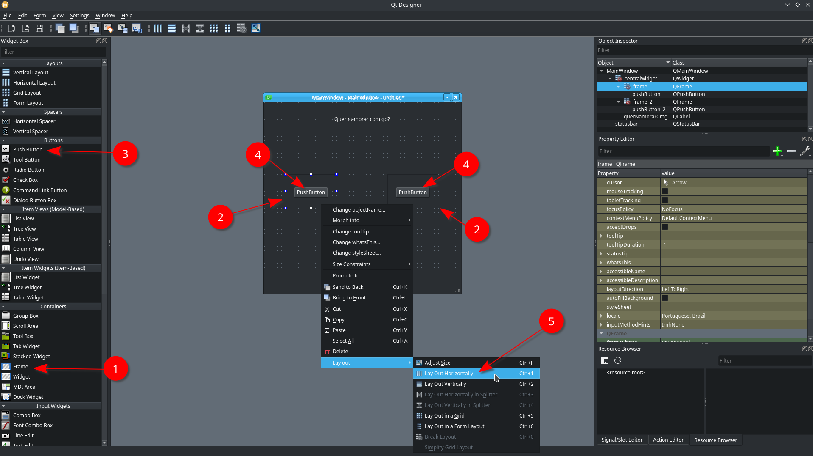
- No canto esquerdo, procure a opção "Frame".
- Agora você deve clicar, segurar e arrastar a opção "Frame" até a "Main Window", repita esse processo duas vezes para adicionar dois "frames".
- No canto esquerdo, procure a opção "PushButton".
- Clique, segure e arraste a opção "PushButton" até a "Main Window", repita esse processo duas vezes para adicionar dois botões.
- Clique com o botão direito na área vazia do "frame", depois clique em "Lay out" e por fim clique em "Lay Out Horizontally". Dessa maneira, o botão ficará centralizado dentro do "frame".
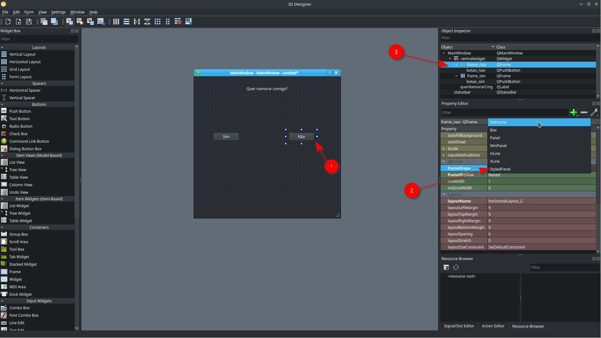
- Altere o texto dentro dos botões para "Sim" e "Não" e depois clique na área vazia do "frame"
- Dentro da seção "QFrame", localizada no canto direito, procure o campo "frameShape" e mude a opção para "NoFrame". Essa opção remove o contorno do "frame".
- Não esqueça de mudar o nome da "label", dos "frames" e dos botões".
Alterando o estilo do programa
- Para deixar o programa visualmente atrativo, devemos mudar o "estilo" dele.
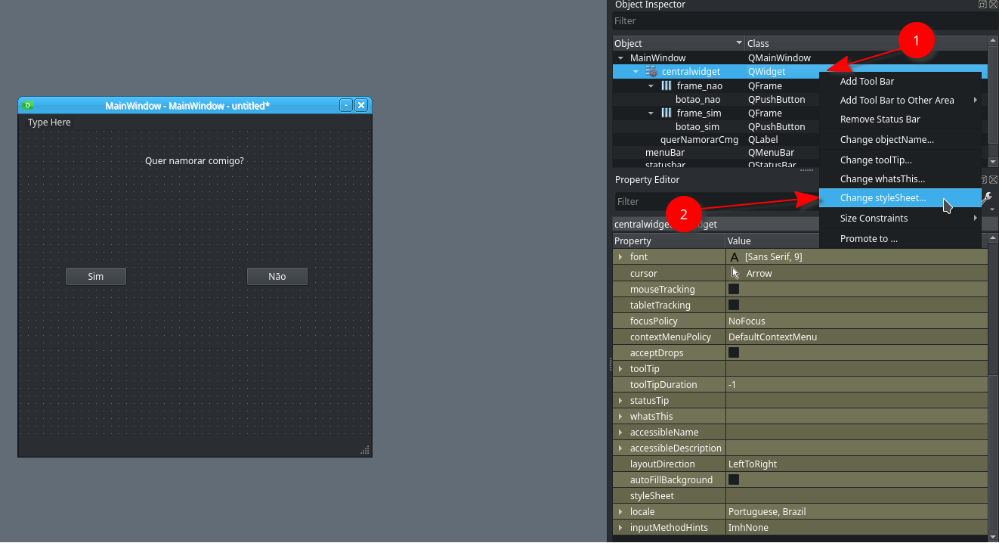
- Clique com o botão direito no campo "centralwidget".
- Agora clique em "Change style sheet...".
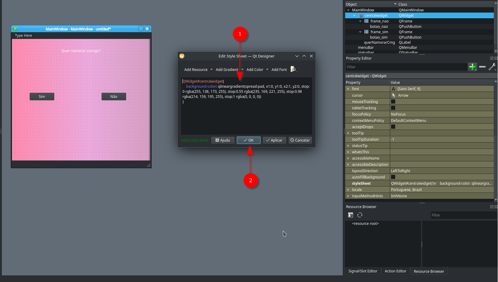
- Adicione esse bloco de código na área vazia do "Edit Style Sheet":
QWidget#centralwidget {
background-color: qlineargradient(
spread: pad,
x1: 0,
y1: 0,
x2: 1,
y2: 0,
stop: 0 rgba(255, 138, 173, 255),
stop: 0.55 rgba(235, 169, 221, 255),
stop: 0.98 rgba(214, 159, 195, 255),
stop: 1 rgba(0, 0, 0, 0)
);
}
QLabel#querNamorarCmg {
font-size: 35px;
font-weight: bold;
color: white;
}
QPushButton {
border: 2px solid white;
font_size: 20px;
font-weight: bold;
color: rgba(255, 138, 173, 255);
min-height: 40px;
border-radius: 20px;
background-color: white;
}
- Clique em "Aplicar" e depois clique em "OK" para salvar as alterações e sair do editor de estilo.
Adicionando o coração ao programa
- Para dar o toque final no romantismo do programa, vamos adicionar um coração. Você pode encontrar o arquivo ".png" desse coração nesse repositório, dentro do diretório "assets".
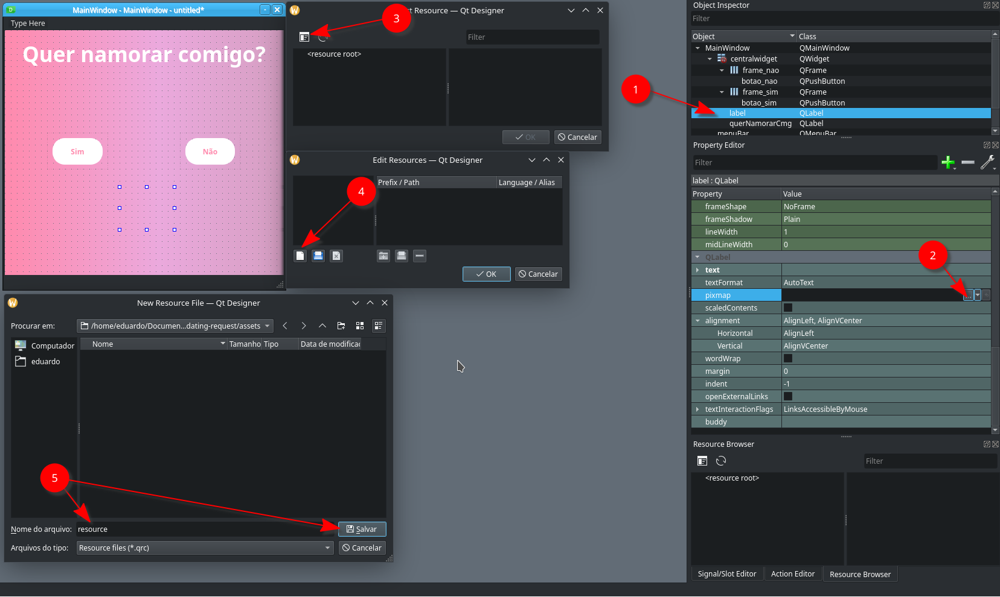
- Repita o processo de adicionar uma "label" na "Main Window" e mude o nome da "label".
- Na seção "QLabel" clique no campo "pixmap" e depois clique no ícone com "três pontinhos".
- Na janela de "Select Resource" clique no ícone no canto superior esquerdo.
- Na janela de "Edit Resource" clique no ícone no canto inferior esquerdo.
- Na janela de "New Resource File" digite o nome "resource" e clique em "Salvar"
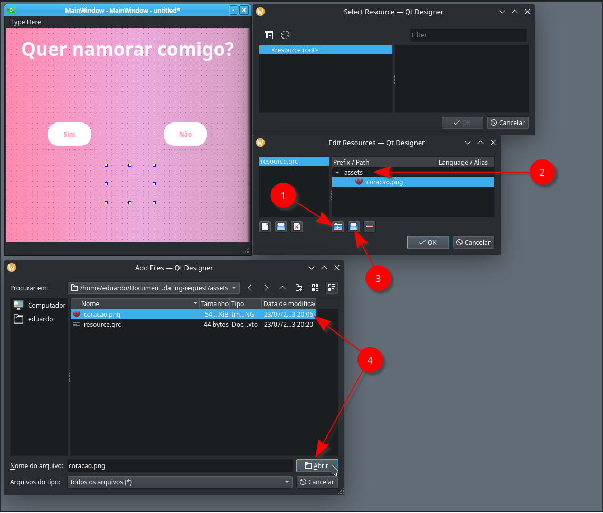
- Na janela "Edit Resource", clique no ícone de uma "pasta azul com sinal de '+'".
- Digite o nome "assets".
- Agora clique no ícone ao lado direito da "pasta azul com sinal de '+'".
- Selecione o diretório onde você salvou o arquivo "coracao.png", depois selecione o arquivo "coracao.png" e clique em "Abrir".
Aviso: Em baixo do campo "pixmap", você vai achar o campo "scaledContents", você deve marcar esse campo.
Salvando o projeto do Qt Designer
- Grande parte do nosso programa foi feito, então precisamos salvar o design dele.
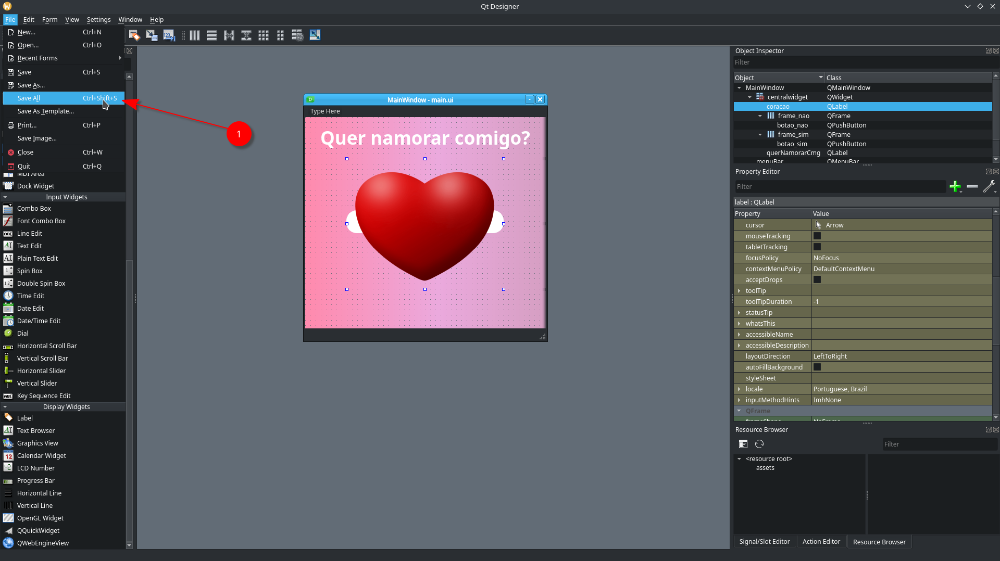
- No canto superior esquerdo, clique em "File", depois clique em "Save As..." e por fim clique em "Salvar".
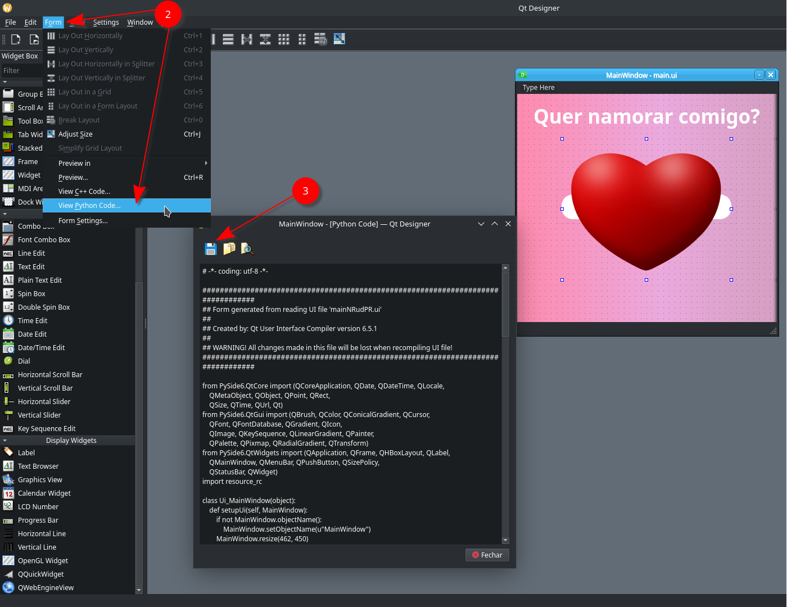
- No canto superior esquerdo, clique em "Form" e depois clique em "View Python Code..."
- Após isso irá aparecer uma janela com o código da interface do nosso programa em Python. Agora, clique no ícone de um "disquete" no canto superior esquerdo e depois clique em "Salvar".
Criando os arquivos em Python para o programa
-
Agora vamos criar os arquivos necessários para "rodar" o nosso programa.
-
Converta o arquivo "resource.qrc" para "resource_rc.py"
pyside6-rcc assets/resource.qrc -o resource_rc.py
- Crie o arquivo "app.py" e cole o bloco de código abaixo nesse arquivo, ele será responsável por executar o nosso programa.
from PySide6 import QtWidgets
from PySide6.QtCore import QEvent
from ui_main import Ui_MainWindow
import random
class MainWindow(QtWidgets.QMainWindow, Ui_MainWindow):
def __init__(self):
super(MainWindow, self).__init__()
self.setupUi(self)
self.coracao.setVisible(False)
self.botao_nao.clicked.connect(self.moveButton)
self.botao_sim.clicked.connect(self.bestOption)
self.frame_nao.installEventFilter(self)
self.frame_sim.installEventFilter(self)
def moveButton(self):
self.frame_nao.move(random.randint(0, 300), random.randint(0, 300))
def bestOption(self):
self.querNamorarCmg.setText("Você escolheu a melhor opção!!!")
self.querNamorarCmg.setStyleSheet("QLabel{\n"
" font-size: 25px;\n"
" font-weight: bold;\n"
" color: rgb(255, 255, 255);\n"
"}\n")
self.botao_sim.setVisible(False)
self.botao_nao.setVisible(False)
self.coracao.setVisible(True)
def eventFilter(self, obj, event):
if event.type() == QEvent.Enter and obj == self.frame_nao:
self.moveButton()
return True
else:
return False
app = QtWidgets.QApplication([])
window = MainWindow()
window.show()
app.exec()
Executando o nosso programa
Aviso: Para executar o programa, é preciso ter o Python instalado na sua máquina.
- Entre no diretório onde se encontra o arquivo "app.py" e digite o seguinte comando no seu terminal:
python3 app.py
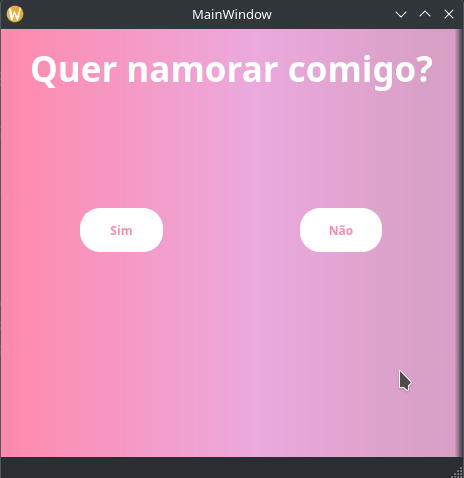
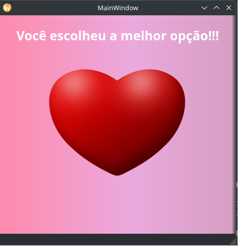
Nota: Caso, você não tenha o Python na sua máquina mas quer utilizar o programa, irei deixar o executável dele, chamado "Dating_request.exe" no repositório do projeto.
Layout do projeto
dating-request/
assets/
coracao.png # Imagem do coração.
resource.qrc
docs/
assets/ # Diretório com as imagens da documentação.
imagem1.png # Imagem 1 da documentação.
imagem2.png # Imagem 2 da documentação.
... # Diversas imagens da documentação...
index.md # Homepage da documentação.
venv/ # Diretório responsável pelo ambiente virtual.
... # Diversos diretórios e arquivos do ambiente virtual...
app.py # Executável Python do nosso programa.
main.ui # Arquivo responsável pela "ui" do programa.
mkdocs.yml # Arquivo de configuração da documentação.
Pipfile # Arquivo gerado ao instalar o Pyside6
resource_rc.py
ui_main.py # Arquivo .py responsável pela "ui" do programa.